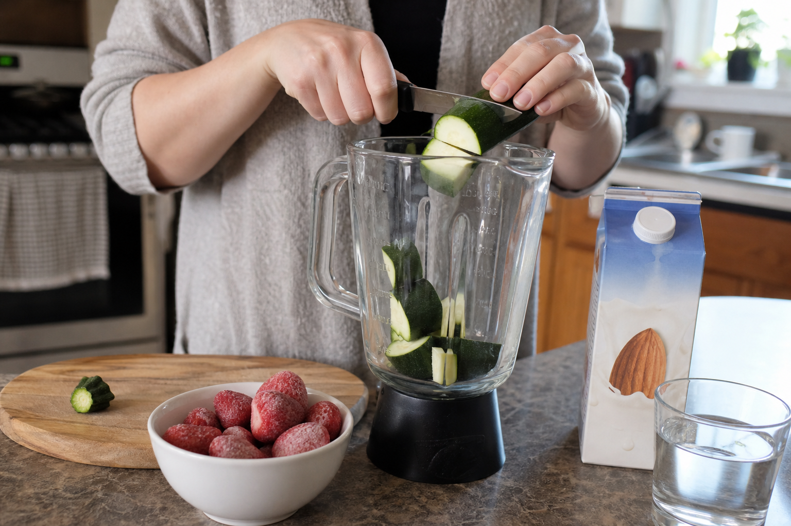
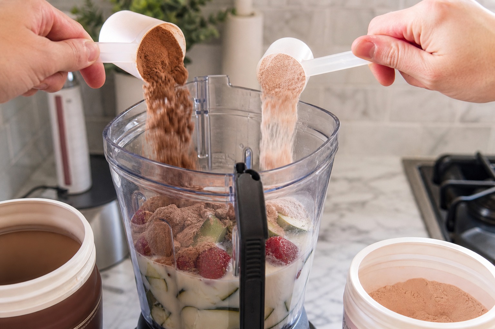
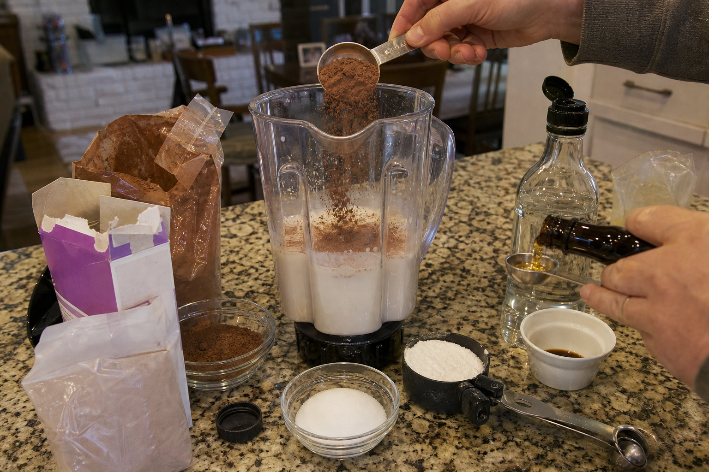
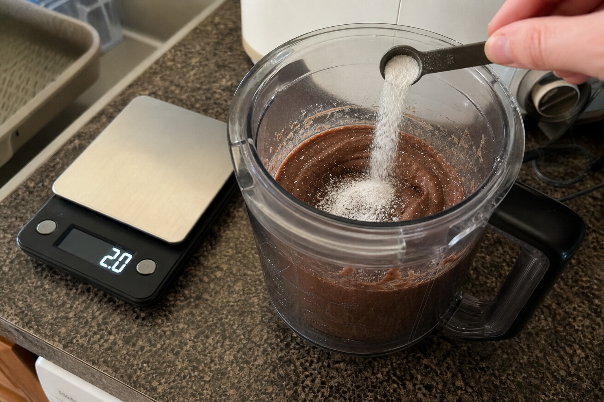
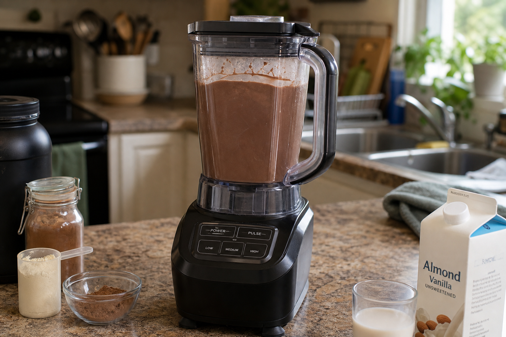
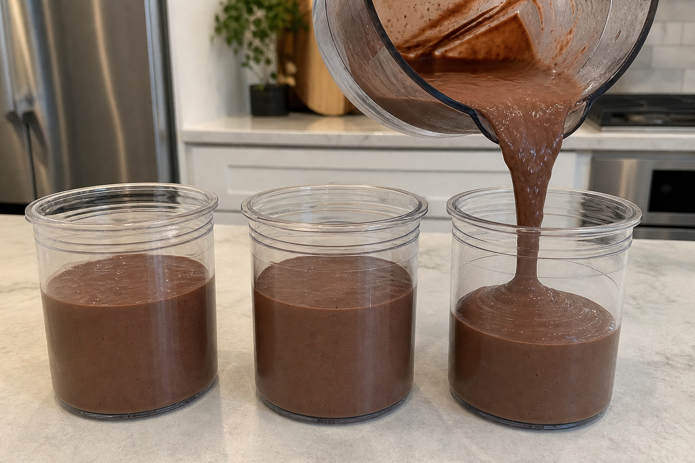
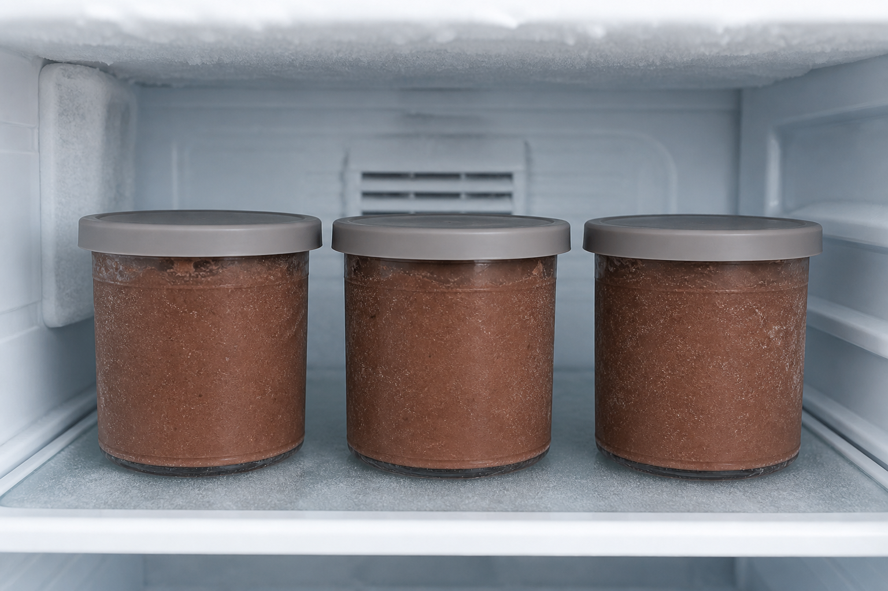
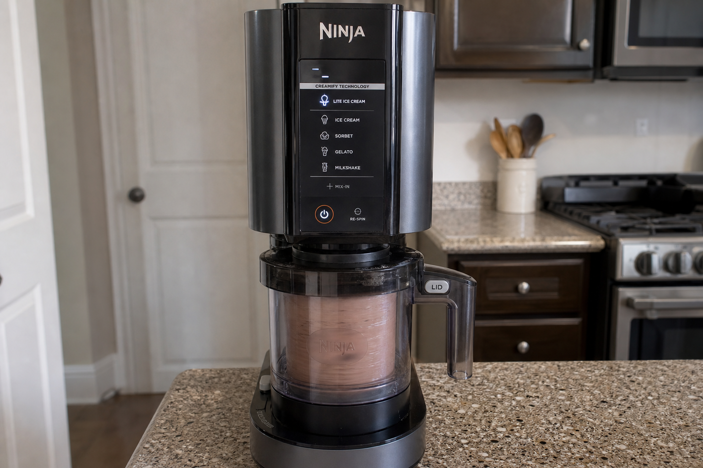

Steps
1. Add the zucchini and fruit base
Trim the ends from 500g raw unpeeled zucchini, then cut it directly into the blender. Add 250g frozen strawberries with the tops removed, 2 cups unsweetened vanilla almond milk, and 1 cup water. Unsweetened plain almond milk also works.

2. Add the protein
Add 1 scoop chocolate whey protein, about 32g, and 1 scoop hot chocolate collagen protein, about 20g.

3. Add the chocolate flavor
Add 20g cocoa powder, 25g instant sugar-free chocolate pudding mix, monk fruit sweetener to taste, vanilla extract to taste, and sugar-free syrup to taste. Good starting points are 1–2 tablespoons monk fruit, about 1 teaspoon vanilla extract, and 1–2 tablespoons sugar-free syrup.

4. Add the xanthan gum
Add 2g xanthan gum. Blend it thoroughly; too much xanthan gum or poor blending can make the texture gummy.

5. Blend until completely smooth
Blend until no zucchini chunks remain and the mixture looks like a thick chocolate milkshake. The blender should be nearly full from the volume. If the blender struggles before it gets smooth, add a small splash of almond milk only to help blending.

6. Fill the Ninja Creami pints
Divide the mixture evenly into about 3 standard Ninja Creami pint containers. Do not exceed the max fill line.

7. Freeze until solid
Place lids on the pints and freeze until completely solid. Best results come after about 24 hours.

8. Spin on Lite Ice Cream
Keep the pint frozen until ready to spin. Run each pint on the Lite Ice Cream setting using the 4-minute spin cycle, 3 total times. Do not add extra liquid between spins.

9. Serve, refreeze, and re-spin as needed
Eat after spinning, or refreeze leftovers. If a refrozen pint becomes fully solid again, re-spin before eating. Clean the blender and Ninja Creami containers thoroughly after use.

Storage and Creami notes
Freeze until fully solid before spinning. Do not exceed the Ninja Creami max fill line. Keep frozen until ready to spin. Eat after spinning or refreeze leftovers. If refrozen solid, re-spin before eating. Clean the blender and Ninja Creami containers thoroughly after use.